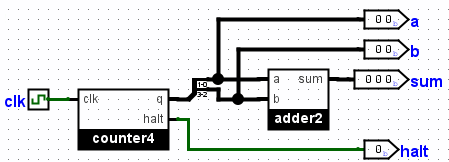

Verificação pela linha de comando
Subseções:
Substituir bibliotecas
Outras opções para verificação
Testar múltiplos arquivos Teste com vectores de teste
O Logisim inclui suporte básico para a execução de circuitos a partir da linha de comando. Isso destina-se tanto para ajudar a verificação orientada de projetos de circuitos, quanto para que instrutores realizem testes automatizados em soluções feitas por alunos.
Vamos começar por mostrar como executar um circuito pela linha de comando. Para o nosso exemplo, vamos supor que tenhamos construído o circuito a seguir em um arquivo chamado adder-test.circ. Ele utilizará um somador de dois bits como um subcircuito e iterará através de um contador com todas as 16 possíveis entradas para ele.

Após esse circuito ter sido construído, executaremos a linha de comando do Logisim, fornecendo o nome do projeto e a opção -tty opção com o parâmetro table.
java -jar logisim-filename.jar adder-test.circ -tty table
Sem abrir qualquer janela, o Logisim carregará o circuito e começará a executá-lo, variando qualquer clock tão rápido quanto possível até concluir a propagação entre cada instante. Após cada propagação ter sido concluída, o Logisim carregará os valores atuais dos pinos de saída; caso tenham mudado na propagação anterior, os valores serão exibidos em formato delimitado por tabulações. Se houver um pino de saída marcado com a palavra especial halt (sensível ao caso), sua saída não será exibida - mas uma vez que o valor do pino chegue a 1, depois que uma propagação for concluída, o Logisim terminará a simulação.
Para o nosso exemplo, o Logisim mostrará a tabela abaixo. Na nossa exposição temos três colunas a, b e sum. Por termos dois pinos de saída correspondentes às duas entradas a e b para o somador de dois bits, essas saídas serão incluídas como as duas primeiras colunas da saída. E como há outro pino de saída correspondente no sum de dois bits, por isso, haverá uma terceira coluna. As colunas serão ordenadas da esquerda para a direita de acordo com a ordem de cima para baixo dentro do circuito.
00 00 000 01 00 001 10 00 010 11 00 011 00 01 001 01 01 010 10 01 011 11 01 100 00 10 010 01 10 011 10 10 100 11 10 101 00 11 011 01 11 100 10 11 101 11 11 110
Próximo: Substituir bibliotecas.